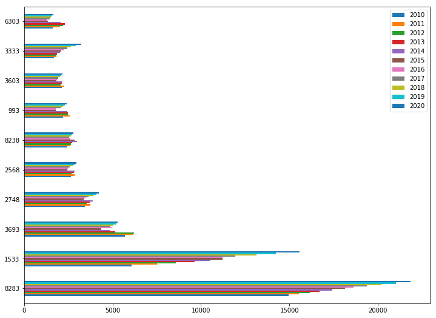
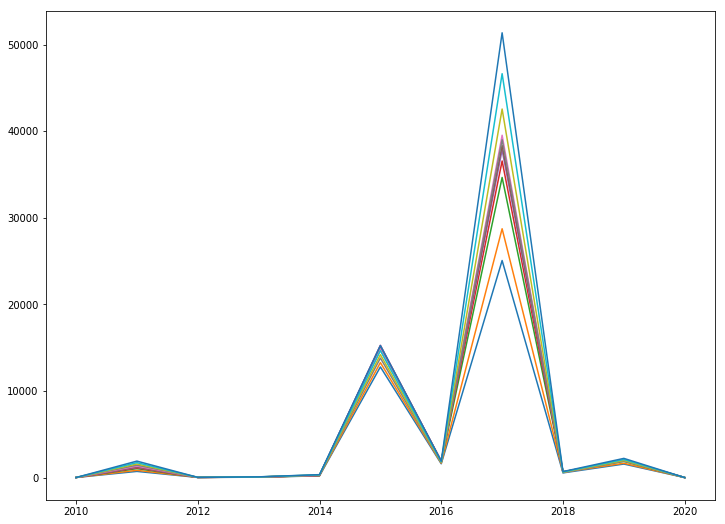
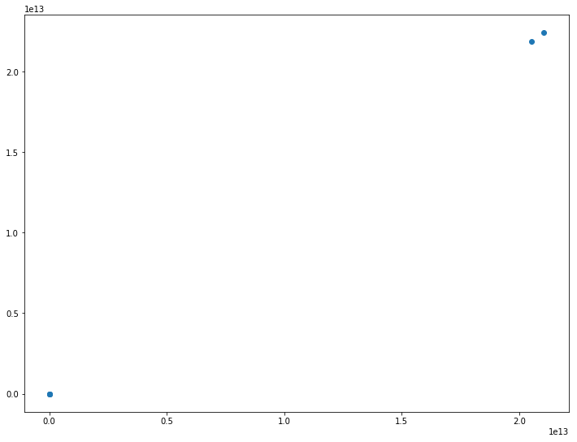

Background
It has been some time since my last post. Life has taken over, with an infant at home and a hectic work schedule it has been difficult to keep up with hobbies. The goal of this post is really to work through a problem and produce some simple vizualization. I don't want too much dust to pile up.
#imports
import pandas as pd
import matplotlib.pyplot as plt
import urllib.request
%matplotlib inline
Get Data
For this project I used data set provided by the World Economic Outlook (WEO) database maintained by the International Monetary Foundation (IMF). They have a readily available, cleaned dataset that represents a complete economic outlook for all the countries of the world. This data set contains interesting features such as GDP, Population, This was last updated in October 2017.
#Build a function to get the data from the IMF website and save it locally
URL = 'http://www.imf.org/external/pubs/ft/weo/2017/02/weodata/WEOOct2017all.xls'
def get_data(URL):
urllib.request.urlretrieve(URL, '/Users/wcontractor/Dev/Python/wcontractor.github.io.git/notebooks/WEOOct2017all.xls')
#Run the above function to get the data
#Don't forget to change the path to save this some place local to your computer!!!!!
get_data(URL)
#Read the data into a Pandas dataframe
df = pd.read_excel('WEOOct2017all.xlsx', parse_cols='C:E,G,AN:AX')
df.dtypes
WEO Subject Code object
Country object
Subject Descriptor object
Units object
2010 object
2011 object
2012 object
2013 object
2014 object
2015 object
2016 object
2017 object
2018 object
2019 object
2020 object
dtype: object
Clean The Data
I noticed all the years of data, which should be number were showing up as objects so I needed to convert them to numeric. I chose to use the apply method to achieve this.
df_cleaned = df_years[[2010, 2011, 2012, 2013, 2014, 2015, 2016, 2017, 2018, 2019, 2020]].apply(pd.to_numeric,errors='coerce')
#Check to make sure the to_numeric method really worked
df_cleaned[2015].sum()
58008139678241.18
df_labels = df[['WEO Subject Code', 'Country']]
df_final = pd.concat([df_labels, df_cleaned],axis=1, join_axes=[df.index])
# Get current size
fig_size = plt.rcParams["figure.figsize"]
# Prints: [8.0, 6.0]
print("Current size:", fig_size)
Current size: [6.0, 4.0]
# Set figure width to 12 and height to 9
fig_size[0] = 12
fig_size[1] = 9
plt.rcParams["figure.figsize"] = fig_size
plt.show();
df_final[df_final['WEO Subject Code']=='NGDPD'].sort_values(2010,ascending=False).head(10).plot(kind="barh")
<matplotlib.axes._subplots.AxesSubplot at 0x10cefe048>

years = [2010, 2011, 2012, 2013, 2014, 2015, 2016, 2017, 2018, 2019, 2020]
plt.plot(years, df_final[years][1:12]);
plt.show();

plt.scatter(df_final[2010][1:].sort_values(ascending=False).head(), df_final[2011][1:].sort_values(ascending=False).head())
<matplotlib.collections.PathCollection at 0x1176ed278>
